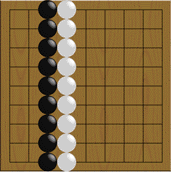

Agora, voltemos ao tabuleiro 9x9.
Será a figura acima é o fim de uma partida?
Parece que as brancas tiveram uma grande vitória. Entretanto...
Se você cercar uma área muito larga, seu adversário pode invadi-la.
As pretas entram na área das brancas. Como há uma grande área onde as pretas podem jogar dentro da "suposta" área branca, se as pretas jogarem bem, elas podem ganhar território lá.
Isso pode ser um pouco difícil pois as brancas fizeram um muro muito forte no lado esquerdo dessa área.
Se as pretas tiverem sucesso, ele pode reduzir em muito o território branco.
Embora esteja longe do fim do jogo, as brancas têm melhores chances de ganhar esse jogo.
Você pode ver por quê?
 Próximo
Próximo
 Conteúdo
Conteúdo